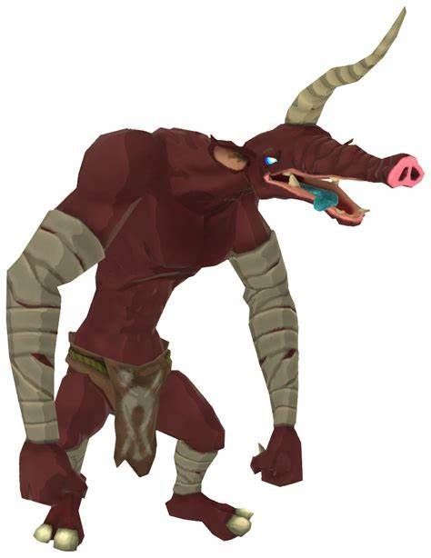

Les Moblins
Les Moblins sont des ennemis plus grands et plus forts que les Bokoblins. Ils sont souvent trouvés en tant que chefs de groupes de Bokoblins.
Caractéristiques des Moblins :
- Grande taille
- Force physique impressionnante
- Utilisation d'armes lourdes
Galerie des Moblins
